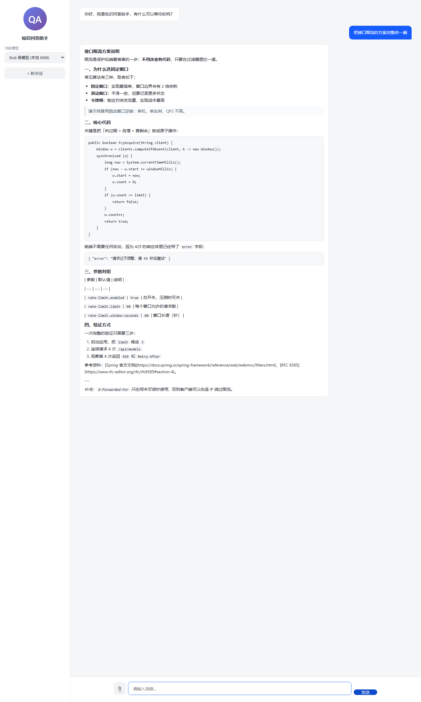
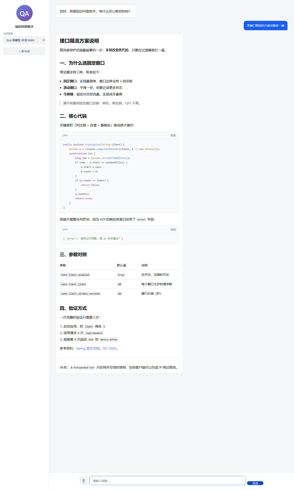
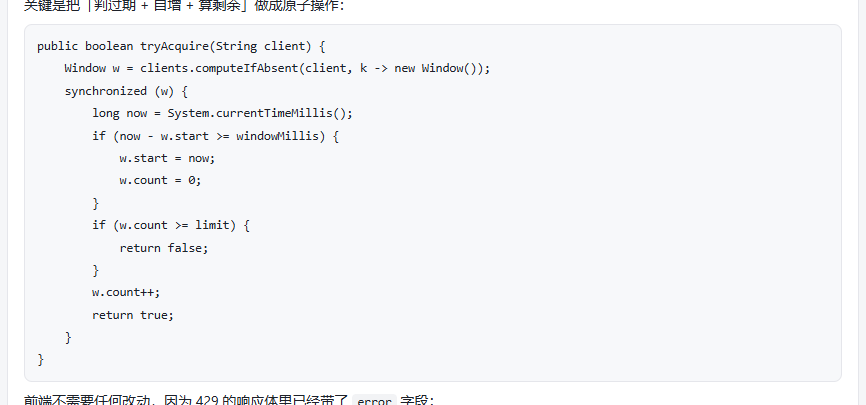
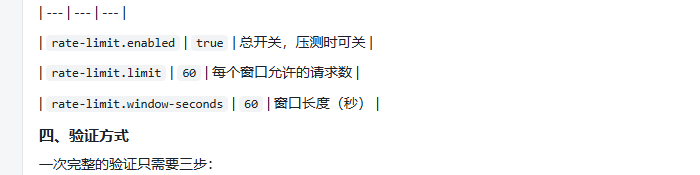
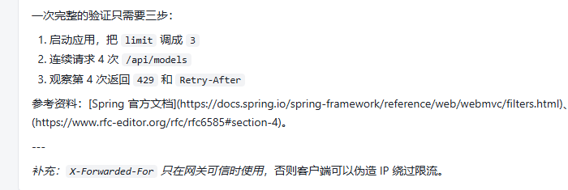
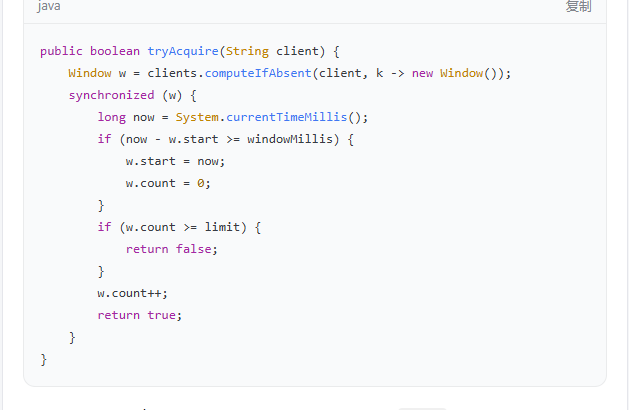
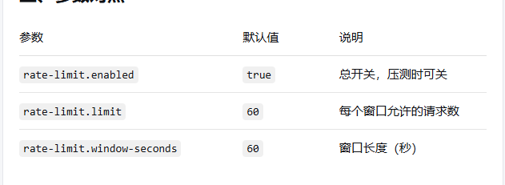
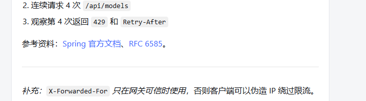

目标：把「能渲染一点 Markdown」升级成「和 DeepSeek 网页端看起来一致」。
这篇文章不靠感觉，规范值全部来自 chat.deepseek.com 线上 CSS 的实际读取（脚本
evidence-复现/DeepSeek对齐/inspect-deepseek.cjs，抓到 4 个样式表、553 KB CSS，命中
markdown / code-block 相关规则 269 条）。改造与验收都在docs/evidence-复现/DeepSeek对齐/。
改造前：表格是 | a | b |、链接是 [文字](url)、代码块没有高亮、标题层级被压平。
改造后：标题 24/22/20/16 四级、代码块带语言标签 + 复制按钮 + 语法高亮、表格有表头与分隔线、
链接蓝色可点、--- 变水平线——与 DeepSeek 的字号/行高/间距/配色逐项对齐。


// inspect-deepseek.cjs（节选）
await page.goto('https://chat.deepseek.com/', { waitUntil: 'domcontentloaded' });
await page.waitForTimeout(8000);
// 1) 收集 <style> 内联样式 + 2) 拉取所有 <link rel=stylesheet> 的文本
const all = inlined + remote; // 553 KB
const wanted = all.split('}').filter(b => /ds-markdown|code-block/i.test(b));
fs.writeFileSync('deepseek-css-markdown.txt', wanted.join('\n\n')); // 269 条
运行方式（本机 Chrome，无需下载浏览器）：
NODE_PATH=<repo>/.workbuddy/tools/node_modules node inspect-deepseek.cjs
产物两个文件：deepseek-css-dump.txt（全量）、deepseek-css-markdown.txt（只看 markdown 相关）。
DeepSeek 的正文容器叫 .ds-markdown，排版全部走 CSS 变量，字号/行高成对出现：
--dsw-font-markdown-base: 16px/28px var(--dsw-font-family);
--dsw-font-markdown-h1: 700 24px/34px var(--dsw-font-family);
--dsw-font-markdown-h2: 700 22px/32px var(--dsw-font-family);
--dsw-font-markdown-h3: 700 20px/30px var(--dsw-font-family);
--dsw-font-markdown-h4: 600 16px/28px var(--dsw-font-family);
--dsw-font-markdown-code-block: 13px/22px var(--ds-font-family-code);
--dsw-font-markdown-code: 14px/22px var(--ds-font-family-code); /* 行内代码 */
--dsw-font-markdown-table: 15px/25px;
--dsw-font-markdown-table-head: 500 15px/25px;
.ds-markdown h1, .ds-markdown h2, .ds-markdown h3 { margin: 32px 0 16px; }
.ds-markdown h4, .ds-markdown h5, .ds-markdown h6,
.ds-markdown .ds-markdown-paragraph { margin: 16px 0; }
.ds-markdown ul, .ds-markdown ol { margin: 16px 0; padding-left: 18px; }
.ds-markdown blockquote { border-left: 2px solid var(--dsw-alias-label-caption);
margin: 16px 0 0; padding-left: 14px; }
「来源」列的含义：实测＝从线上 CSS 直接读到的值；自定＝DeepSeek 该细节由运行时组件
（banner、复制按钮）实现，CSS 里没有可读规则，按视觉特征补齐。
| 项 | 值 | 来源 |
|---|---|---|
| 正文字号 / 行高 | 16px / 28px |
实测 |
| 字体栈 | "Inter", system-ui, -apple-system, "Segoe UI", "PingFang SC", "Microsoft YaHei" |
实测 |
| 正文色 | #0f1115（neutral-bluish-1000） |
实测 |
| 段间距 | margin: 16px 0 |
实测 |
| 加粗 | font-weight: 600 |
实测 |
| 段落软换行 | 段内单换行用 <br> 保留（聊天场景更符合预期） |
自定 |
| 级别 | 字号 / 行高 | 字重 | 上下间距 |
|---|---|---|---|
# h1 |
24px / 34px | 700 | 32px 0 16px |
## h2 |
22px / 32px | 700 | 32px 0 16px |
### h3 |
20px / 30px | 700 | 32px 0 16px |
#### h4 |
16px / 28px | 600 | 16px 0 |
##### / ###### |
16px / 28px | 600 | 16px 0 |
旧实现把
#映射成 h3、####映射成 h5，层级被压平——这是「看起来不像 DeepSeek」的第一大原因。
| 项 | 值 | 来源 |
|---|---|---|
| 容器背景 | #f9fafb（neutral-bluish-50） |
实测 |
| 容器圆角 | 12px（--dsl-code-block-border-radius） |
实测 |
| 容器外边距 | 16px 0 |
实测 |
| 顶部 banner | padding: 9px 14px，字号 13px |
实测 |
| 内容字号 / 行高 | 13px / 22px，等宽 Menlo, Monaco, Consolas, … |
实测 |
| 内容内边距 | padding: 16px |
实测 |
| 换行策略 | white-space: pre-wrap + word-break: break-all（长行折行，不横向滚动） |
实测 |
| 语言标签 / 复制按钮 | 左语言名、右「复制」，13px + 灰色 #81858c |
自定 |
语法高亮配色（取 DeepSeek 浅色代码主题的 .token.* 规则）：
| Token | 颜色 |
|---|---|
关键字 keyword |
#a626a4 |
字符串 string |
#50a14f |
数字 / 常量 number |
#986801 |
注释 comment |
#a0a1a7（斜体） |
函数名 function |
#4078f2 |
类型 / 类名 class |
#c18401 |
| 普通标点 | #383a42 |
| 项 | 值 | 来源 |
|---|---|---|
| 布局 | border-collapse: collapse，width: max-content |
实测 |
| 单元格内边距 | 10px 16px |
实测 |
| 首列左内边距 / 末列右内边距 | 0（表格出血对齐正文） |
实测 |
| 表头 | 15px/25px、font-weight: 500、下边框 rgba(0,0,0,.12) |
实测 |
| 单元格 | 15px/25px、下边框 rgba(0,0,0,.1) |
实测 |
| 列宽约束 | min-width: 100px、max-width: min(30vw, 320px) |
实测 |
| 溢出处理 | 外层 overflow-x: auto 横向滚动 |
自定 |
| 项 | 值 | 来源 |
|---|---|---|
| 列表外边距 | 16px 0 |
实测 |
| 缩进 | padding-left: 18px |
实测 |
| 嵌套列表上间距 | margin-top: 4px |
实测 |
| 列表项间距 | 4px |
自定 |
| 任务列表 | - [x] 渲染为禁用态复选框 |
自定 |
| 项 | 值 | 来源 |
|---|---|---|
| 左边框 | 2px solid #adb2b8（label-caption） |
实测 |
| 左内边距 | 14px |
实测 |
| 外边距 | 16px 0 |
实测 |
| 文字色 | 次级色 #4e5969 |
自定 |
| 元素 | 语法 | 样式 |
|---|---|---|
| 粗体 | **文字** / __文字__ |
font-weight: 600 |
| 斜体 | *文字* / _文字_ |
font-style: italic |
| 删除线 | ~~文字~~ |
line-through，#81858c |
| 行内代码 | `code` |
14px/22px 等宽、rgba(0,0,0,.06) 底、4px 圆角 |
| 链接 | [文字](https://…) |
#3964fe（deepseek-500）、默认无下划线、hover 下划线 |
| 裸链接 | https://… |
自动识别为链接 |
| 图片 |  |
max-width: 100%，8px 圆角 |
| 分割线 | --- / *** |
1px solid rgba(0,0,0,.1)，margin: 32px 0（实测） |
链接只放行
http(s)://、mailto:、/、#、./开头的地址，javascript:会被降级成纯文本。



用同一段富文本回复统计 DOM（脚本 shots-deepseek.cjs）：
| 指标 | 改造前 |
|---|---|
table / tr |
0 / 0 |
pre / 高亮 span |
2 / 0 |
a[href] |
0 |
hr |
0 |
| 标题 | h3×1、h4×4（层级压平） |
| 残留原始 Markdown | 无（但 |、[]()、--- 被当普通文字） |
新建 docs/evidence-复现/DeepSeek对齐/fixture-富文本.md，必须覆盖全部元素，否则截图比不出问题：
# 一级标题
## 二级标题
- 无序列表
- 嵌套列表
1. 有序列表
> 引用一行
```java
public boolean tryAcquire(String client) { … }
```
| 参数 | 默认值 | 说明 |
| --- | --- | --- |
| `rate-limit.limit` | `60` | 每窗口请求数 |
参考资料：[Spring 官方文档](https://docs.spring.io/…)
---
*补充说明*
不需要真实 API Key，桩服务固定返回上面这个文件：
# 终端 1：桩模型（OpenAI 兼容）
node docs/evidence-复现/桩服务/stub-openai.cjs 9099 \
--reply-file=docs/evidence-复现/DeepSeek对齐/fixture-富文本.md
# 终端 2：应用（跳过数据库初始化，关掉限流避免干扰）
mvn -o spring-boot:run \
-Dspring-boot.run.jvmArguments="-Dstdout.encoding=UTF-8 -Dfile.encoding=UTF-8" \
-Dspring-boot.run.arguments="--spring.config.additional-location=file:docs/evidence-复现/桩服务/application-stub.yml \
--spring.sql.init.mode=never \
--spring.datasource.hikari.initialization-fail-timeout=-1 \
--rate-limit.enabled=false"
验证：curl --noproxy '*' http://localhost:8080/api/models 返回 3 个模型即成功。
NODE_PATH=<repo>/.workbuddy/tools/node_modules node \
docs/evidence-复现/DeepSeek对齐/shots-deepseek.cjs --out=before
脚本会发送一条消息 → 等回复渲染完 → 打印 DOM 统计 → 截「整体 / 代码块 / 表格」三张图。
index.html 的 <style>）把旧的 .md-h / .md-ul / .md-quote / .md-code 一套整体换成规范值，核心片段：
.message.bot { font-size: 16px; line-height: 28px; color: #0f1115; max-width: min(880px, 86%); }
.message.bot h1 { font-size: 24px; line-height: 34px; font-weight: 700; margin: 32px 0 16px; }
.message.bot h2 { font-size: 22px; line-height: 32px; font-weight: 700; margin: 32px 0 16px; }
.message.bot h3 { font-size: 20px; line-height: 30px; font-weight: 700; margin: 32px 0 16px; }
.message.bot h4 { font-size: 16px; line-height: 28px; font-weight: 600; margin: 16px 0; }
.message.bot .md-p { margin: 16px 0; }
.message.bot .md-code { margin: 16px 0; border-radius: 12px; background: #f9fafb; overflow: hidden; }
.message.bot .md-code-banner { display: flex; justify-content: space-between;
padding: 9px 14px; font-size: 13px; color: #81858c; }
.message.bot .md-code pre { margin: 0; padding: 16px; white-space: pre-wrap;
word-break: break-all; font: 400 13px/22px Menlo, monospace; }
.message.bot th { font-size: 15px; font-weight: 500; padding: 10px 16px;
border-bottom: 1px solid rgba(0,0,0,.12); }
.message.bot td { font-size: 15px; padding: 10px 16px; border-bottom: 1px solid rgba(0,0,0,.1); }
.message.bot th:first-child, .message.bot td:first-child { padding-left: 0; }
index.html 的 <script>）顺序不能变：先转义 → 再重建标签。整条链路四层：
renderMarkdown：围栏代码块 → 标题 → 分割线 → 引用 → 表格 → 列表 → 段落；inline：行内代码/图片/链接先「抽走占位」，再处理粗斜体删除线，最后回填；highlight：按语言取一组「粘性正则 + 样式类」，逐字符推进，命中即包 <span>；bindCopyButtons：读取 code.textContent 写入剪贴板（高亮不改字符，所以文本一定对）。关键片段（列表嵌套 + 表格）：
// 列表：用栈维护层级，li 先不闭合，让嵌套 <ul> 落在上一个 li 内部
if (level > stack.length) { out.push('<' + tag + '>'); stack.push(tag); }
else { closeLists(level); closeLi(); /* 同级换行或换类型 */ }
// 表格：分隔行 |---|:--:| 决定对齐
const aligns = splitRow(lines[start + 1]).map(s =>
/^:-+:$/.test(s) ? 'center' : /^-+:$/.test(s) ? 'right' : '');
// 高亮主循环：粘性正则从当前位置匹配，不命中就当一个普通字符
while (i < code.length) {
for (const r of rules) {
r.re.lastIndex = i;
const m = r.re.exec(code);
if (m && m.index === i) { emit(m[0], r.cls); i += m[0].length; break; }
}
}
cp src/main/resources/static/index.html target/classes/static/index.html # 运行中的实例直接生效
NODE_PATH=<repo>/.workbuddy/tools/node_modules node \
docs/evidence-复现/DeepSeek对齐/shots-deepseek.cjs --out=after
NODE_PATH=<repo>/.workbuddy/tools/node_modules node \
docs/evidence-复现/DeepSeek对齐/check-copy-xss.cjs
| 改造前 | 改造后 |
|---|---|
 |
| 改造前 | 改造后 |
|---|---|
 |
| 改造前 | 改造后 |
|---|---|
 |
| 指标 | 改造前 | 改造后 |
|---|---|---|
table / tr |
0 / 0 | 1 / 4 |
pre / 高亮 span |
2 / 0 | 2 / 21 |
a[href] |
0 | 2 |
hr |
0 | 1 |
| 标题 | h3×1、h4×4 | h1×1、h2×4 |
| 残留原始 Markdown | 有（|、[]()、---） |
否 |
另外三条功能验证（验收-改造后.txt）：
code.textContent 一致（Windows 剪贴板把 \n 存成 \r\n，比较时需归一化）；<img onerror> 与 <script> 计数均为 0，javascript: 链接不进 href，原文以字面量显示；/api/chat → AgentScope ReActAgent → 桩服务，渲染层改动不碰后端。| 坑 | 现象 | 处理 |
|---|---|---|
word-break: break-all |
Java 长行会在标识符中间断开 | 与 DeepSeek 一致（它也是 pre-wrap + break-all），要横向滚动就改回 pre |
| 占位符冲突 | 正文里恰好出现占位串会被替换 | 用私用区字符 \uE000/\uE001 做行内占位，正常文本不会命中 |
粘性正则 lastIndex |
规则对象被复用，忘记重置就漏匹配 | 每次 exec 前显式 r.re.lastIndex = i |
| 列表 HTML 合法性 | 嵌套 <ul> 变成 <li> 的兄弟节点 |
li 延迟闭合，嵌套列表写在 li 内部 |
| 元素截图失真 | 超长气泡用 elementHandle.screenshot() 出现大片空白 |
加大 viewport + scrollIntoView + clip 截视口 |
| 无 PIL 环境裁图 | pip install pillow 走不通 |
用 Chrome 打开 data: 图片再 clip 截图（crop.cjs） |
| 未支持语法 | 数学公式、内嵌 HTML、超过 2 层的列表缩进 | 当前只做常见 GFM 子集，其余按纯文本降级 |
| 文件 | 作用 |
|---|---|
src/main/resources/static/index.html |
样式 + 渲染器（唯一改动文件） |
evidence-复现/DeepSeek对齐/inspect-deepseek.cjs |
抓 DeepSeek 线上 CSS |
evidence-复现/DeepSeek对齐/deepseek-css-markdown.txt |
命中的 269 条规则（规范依据） |
evidence-复现/DeepSeek对齐/fixture-富文本.md |
覆盖全部元素的样本回复 |
evidence-复现/DeepSeek对齐/shots-deepseek.cjs |
截图 + DOM 统计 |
evidence-复现/DeepSeek对齐/check-copy-xss.cjs |
复制按钮 / XSS 回归 |
evidence-复现/DeepSeek对齐/crop.cjs |
用 Chrome 裁图 |
evidence-复现/DeepSeek对齐/before-*.png / after-*.png |
对比图 |
evidence-复现/DeepSeek对齐/验收-改造后.txt |
验收原始输出 |